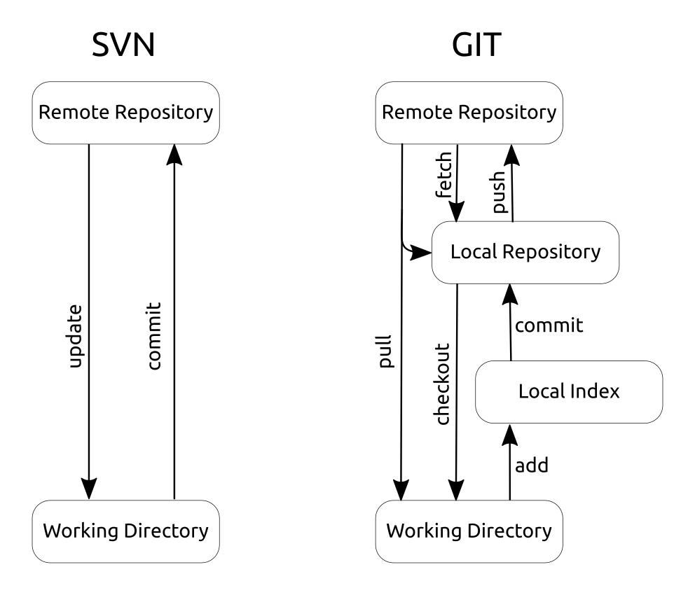

Git:
Distributed Version Control
Use arrow keys to navigate slides


Slides made with impress.js (MIT License)
Warum VCS?

Vorwissen?
Inhalt
- Git-Grundlagen
- Die wichtigsten git-Befehle
- Übungen dazu
- branches und merges
- Das Git-Ökosystem
- Git in der Schule
Git-Grundlagen
Git-Befehle
git verb parameter
z.B.:aktuellen Zustand anzeigen
git status
Neues Git-Repository
git init
Git-Repository herunterladen
git clone externes_Repo
Änderungen in Index übernehmen
git add Dateinamen
Änderungen aus dem Index in das Repository übernehmen
git commit
Änderungen in externes Repository übertragen
git push
Änderungen aus dem externen Repository holen
git pull
Vorbereitung:
Git configurieren
git config --global user.name "Anna Mustermann"
git config --global user.email "muster@firma.de"
git config --global color.ui auto
git config --global core.editor "nano"
Übung 1:
Neues Git-Repo erstellen:
cd ~/Desktop/
mkdir erstesrepo
cd erstesrepo
git init
git status
nano einedatei.txt
git add einedatei.txt
git commit
git status
Übung 2:
Git-Repo bearbeiten:
dateien wie gewohnt editieren
git add dateien, alternativ auch *
git commit
Das "Log", der Blick in die Vergangenheit
Einige von vielen Möglichkeiten:
git log
gitg
gitk
tig
Übung 3:
Git-Repo kopieren:
cd ~/Desktop/
git clone https://pisa.tcs.ifi.lmu.de/gitea/tdi/gg.git
Login: tdi Passwort:tdi2019
cd gg
git status
ls
Übung 4:
Pull / Fetch
git pull
git fetch
git merge origin/master
Übung 4:
Merge
Oft geht der Merge automatisch. Handarbeit ist nur dann nötig, wenn Konflikte auftreten - z.B. bei Änderungen in der gleichen Zeile
git mergetool
Wie oft commiten?
Der Blick in die Vergangenheit
git checkout commit
git diff commit
Branches
git checkout -b neuer-branch-name
Selbstgehosted
- Gitea
- Gitlab
Pull-Requests
Statt in fremde Repositories zu pushen, gibt man dem Eigentümer eine einfache Möglichkeit meine Änderungen zu übernehmen
Git in der Schule
- Gitea
- Tortoise Git
- BlueJ
Danke für die Aufmerksamkeit
christoph.krichenbauer@ifi.lmu.de